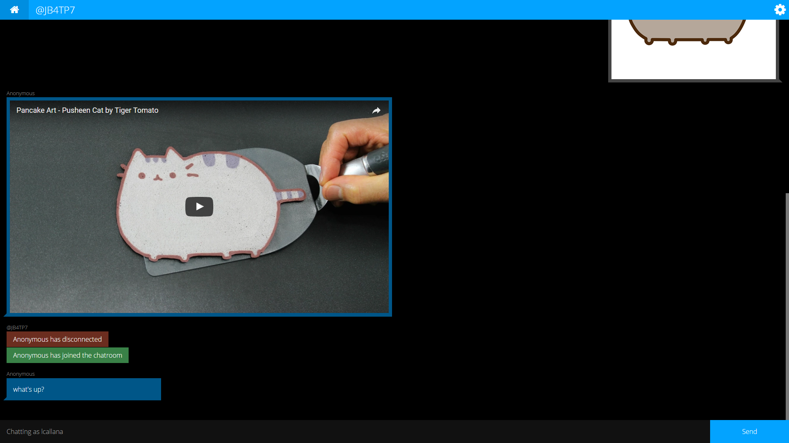
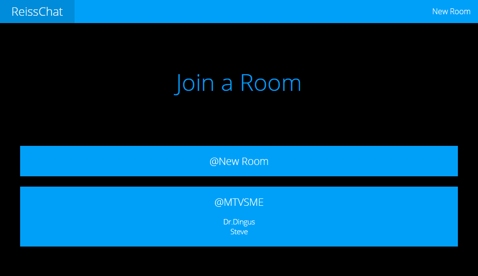
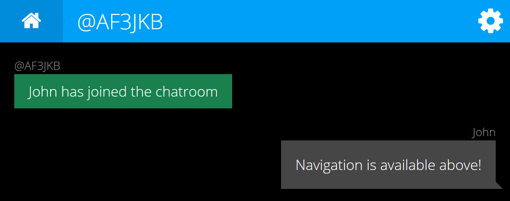
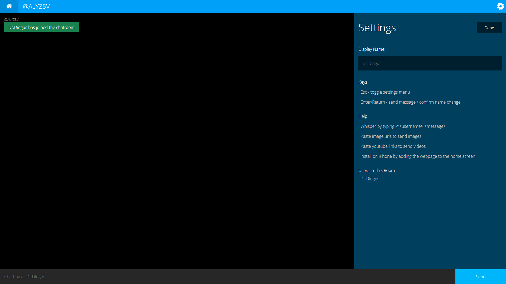
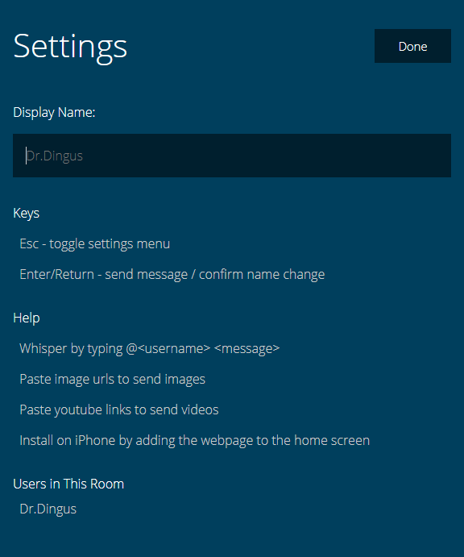
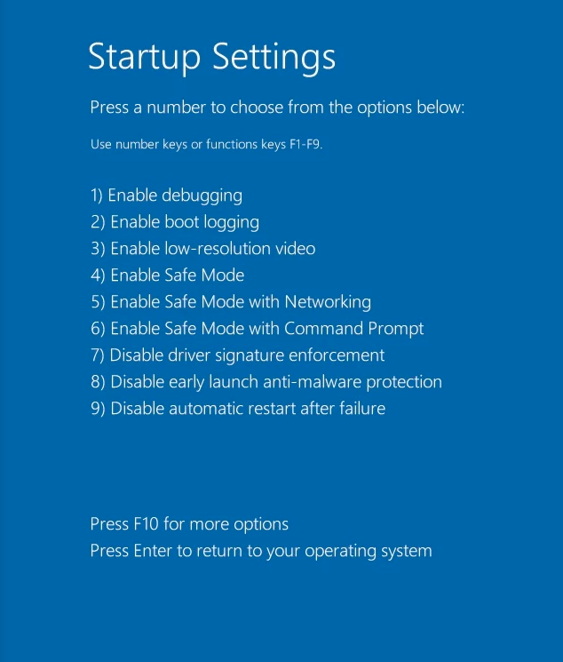

Navigation
From the main screen, a user can make a new chatroom or join an existing one. For existing ones, the room id (which can be plugged into the url, in this case http://url/MTVSME) and users in the room are listed.

Once in a room, users can see all navigation in the bar at the top. Clicking the home icon brings the user back to the home screen, and other relevant information (e.g. the room id and the settings menu) are also in the top bar.

Settings Menu
The menu slides in from the right side of the screen by clicking the top-right gear, and slides out of view when the gear is clicked again or if the done button is clicked.

Menus were designed to look like a Windows 8 screen with a solid color (mine is on the left).


Try It Out
Here's a link to the source code if you want to run the server yourself! Instructions are in the README.
Download the Source
Back to Home